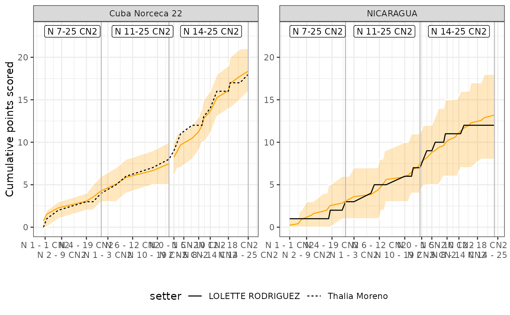
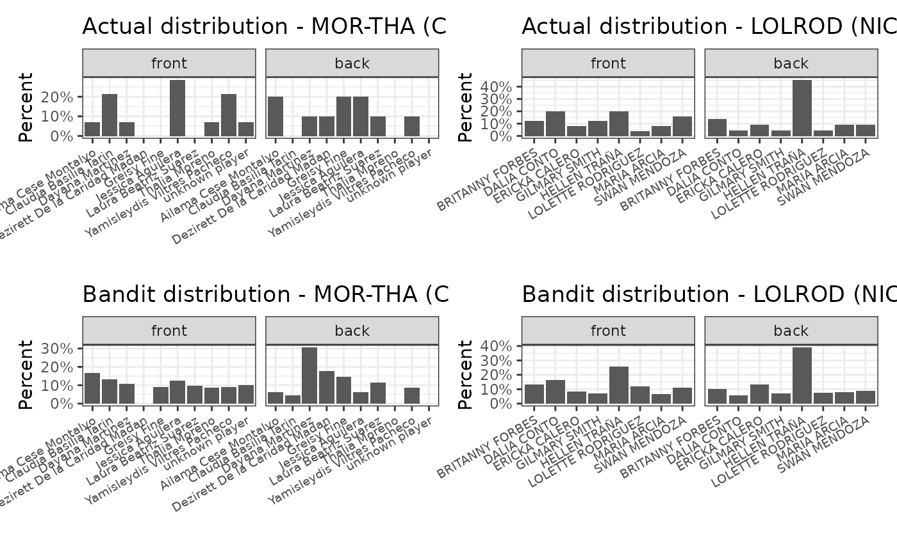

ov_create_history_table.RdCreate a prior table from a dvw or a directory of dvw files
string: path to one or more datavolley files, a list of one or more datavolley objects, or a directory containing datavolley files
character: one or both of "Reception", "Transition"
string: either "code", "zone", "tempo" or "setter call"
string: either "rotation", or "front_back"
character: vector of attack codes to exclude
logical: reduce the prior parameter values
A list, currently with one component named "prior_table"
## use this file to create the priors
hist_dvw <- ovdata_example("190301_kats_beds")
history_table <- ov_create_history_table(dvw = hist_dvw, attack_by = "setter call",
setter_position_by = "front_back")
## use it on another file (here, the same file for demo purposes)
## usually the history would be from a reference set of previous matches
dvw <- ovdata_example("190301_kats_beds")
setter <- ov_simulate_setter_distribution(dvw = dvw, play_phase = "Reception", n_sim = 100,
attack_by = "setter call", attack_options = "use_history",
setter_position_by = "front_back",
history_table = history_table, filter_sim = TRUE)
## plot the results
ov_plot_ssd(setter, overlay_set_number = TRUE)

ov_plot_distribution(setter)
#> Warning: Removed 2 rows containing missing values (geom_tile).
#> Warning: Removed 2 rows containing missing values (geom_text).
